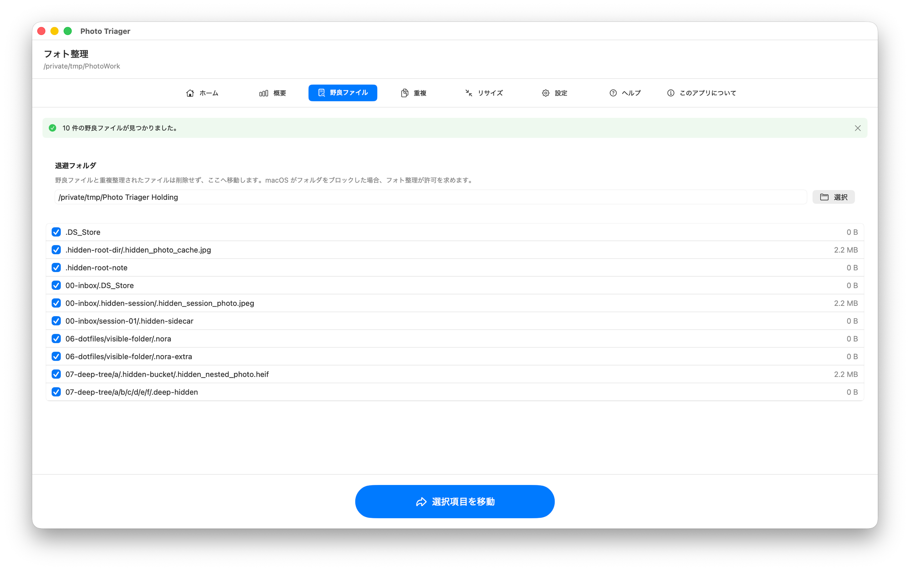
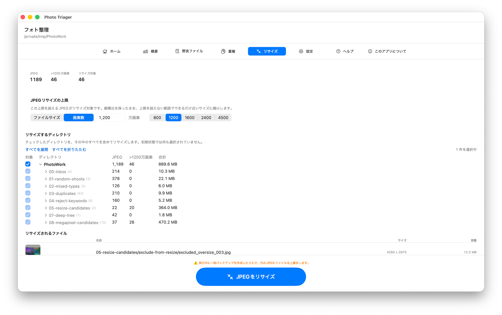

フォト整理
編集、納品、アーカイブ前に写真フォルダを確認して整理します。
macOS 14以降が必要です。
フォト整理は、写真フォルダの中身を確認して整理するMacアプリです。サブフォルダもまとめてスキャンし、画像の種類や枚数、重複ファイルを確認できます。除外候補のフォルダを分けて集計し、隠しファイルを退避したり、大きなJPEGをファイルサイズや画素数に合わせて縮小したりできます。処理の進み具合と結果は画面で確認できます。
写真の編集や長期的なカタログ管理ではなく、編集・納品・保管の前にフォルダを整理するためのアプリです。
ダウンロード


サポート
ご質問や不具合のご報告は、メールでご連絡ください。
お問い合わせの前に
- Finderと件数が違う場合: 設定を確認してください。フォト整理は、設定で選んだ拡張子の画像だけを集計します。
- 除外候補フォルダが検出されない場合: 「除外候補フォルダのキーワード」に該当する語を追加し、再スキャンしてください。
- ファイルを移動できない場合: フォルダへのアクセスが許可されていない可能性があります。画面の案内に従って、退避先フォルダへのアクセスを許可してください。
- JPEGをリサイズする前に: 必ずバックアップを作成し、チェックしたディレクトリを確認してください。JPEGリサイズは元ファイルを上書きします。
マニュアル





ホーム
スキャンする写真フォルダを選びます。中にあるサブフォルダもまとめて調べます。別のフォルダに切り替えたり、ほかのアプリでファイルを変更した後に再スキャンしたりできます。
概要
整理を始める前に、フォルダ全体の状況を確認できます。画像やフォルダの数、ファイルの種類、除外候補と通常のフォルダの集計、大きなJPEGの候補が表示されます。
野良ファイル
ドットで始まる隠しファイルを探し、選択した項目を退避フォルダへ移動します。直接削除せず、後で確認できる場所へ移動します。
重複
完全一致の重複ファイルを探します。各グループで残すファイルを選び、必要に応じてプレビューし、残りを退避フォルダへ移動します。
リサイズ
設定した上限を超えるJPG/JPEGを縮小します。上限はファイルサイズ（MB）または画素数（万画素）で指定できます。たとえば1200万画素を指定すると、2400万画素の写真はおよそ半分の画素数になります。画素数で指定した場合は縦横比を保ち、上限を超えない範囲でできるだけ近い大きさに縮小します。
対象のフォルダにチェックを入れるまで、リサイズは実行できません。選んだフォルダ内の画像のうち、設定した上限を超えるJPEGが対象になります。処理はファイルのパス順に進み、完了後に変更したファイルの概要が表示されます。
JPEGは「高品質」の設定で保存します。元のJPEGですでに失われた細部は、保存時の品質を最大にしても復元できないため、画質とファイルサイズのバランスを考慮しています。
設定
- 言語: アプリ表示を英語と日本語で切り替えます。
- カウント対象: スキャン、集計、重複検索、概要に含める画像拡張子を選びます。
- 除外候補フォルダのキーワード: reject、rejected、ぼつ、ボツ、没などのフォルダを通常フォルダと分けて集計します。
- 退避フォルダ: 隠しファイルや重複ファイルを退避するフォルダを選びます。
- JPEGリサイズの上限: ファイルサイズ（MB）または画素数（万画素）の上限を設定します。この上限を超えるJPG/JPEGがリサイズの対象になります。
ファイル安全性の注意
フォト整理は、選択したフォルダ内でファイルの移動や、リサイズ時の元JPEGファイルの上書きなどのファイル操作を行います。Hoshino Software は、ファイル、メタデータ、ディレクトリ構成、リサイズ結果、処理途中の状態が保持されること、復元可能であること、中断・エラー・損失・破損がないことを保証しません。必ず別のバックアップを用意し、変更してもよいコピーまたはファイルにのみ使用してください。
法的情報
プライバシーポリシー
最終更新: 2026年6月
収集しない情報
フォト整理は、個人データを収集、保存、使用、共有、販売、転送しません。アプリはMac上でローカルに動作するよう設計されています。解析、広告ネットワーク、トラッキングSDK、Hoshino Softwareのサーバーは使用しません。
ファイルとフォルダ
フォト整理は、ユーザーが選択したフォルダ、またはmacOSの許可を与えたフォルダにのみアクセスします。ファイルパス、画像内容、メタデータ、重複情報、リサイズ結果、設定は、ユーザーがサポートへメールで送信しない限りデバイス上に残ります。
サポートメール
サポートへ連絡する場合、問題の診断のため、メール本文にアプリバージョンや設定情報が含まれることがあります。そのメールを送信するかどうかはユーザーが選択します。
第三者サービス
フォト整理は、第三者の解析、広告、トラッキングサービスと連携しません。
ポリシーの変更
このプライバシーポリシーは更新されることがあります。変更はこのページに掲載された時点で有効になります。
お問い合わせ
このプライバシーポリシーに関するご質問は、support [at] hoshinosoftware [dot] com までご連絡ください。